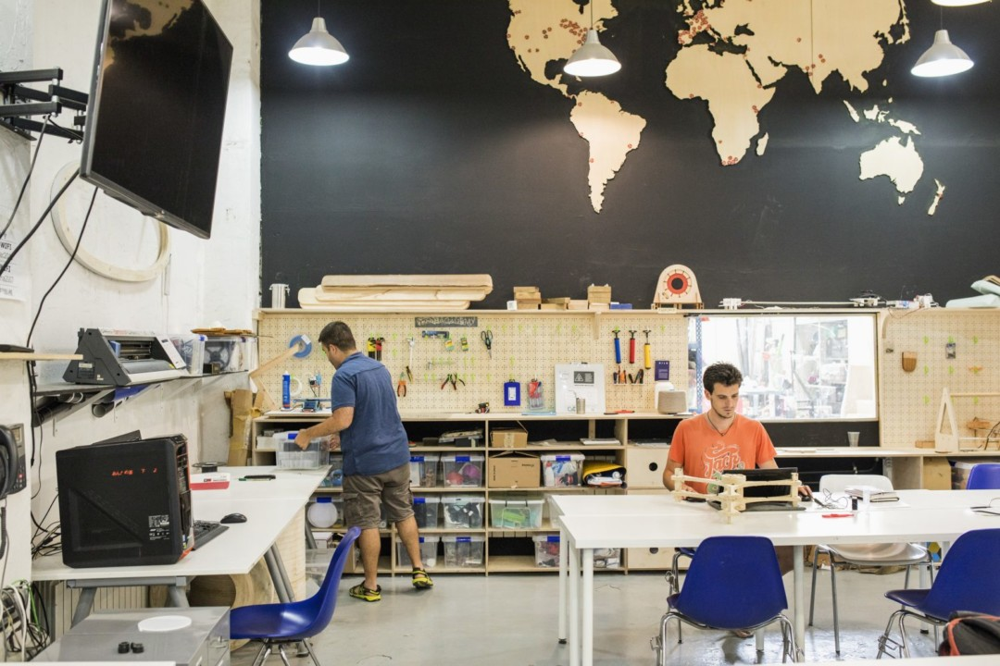
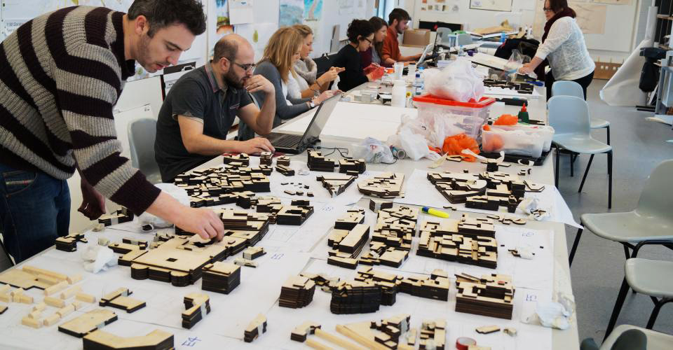
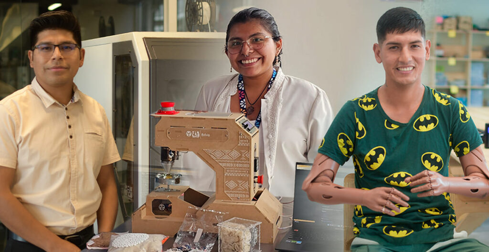

¿CÓMO EMPEZAR UN FAB LAB?
Una guía para montar tu propio Fab Lab en México
Comienza aquíLaboratorio de Fabricación Digital
Un Fab Lab es un componente de extensión educativa del Centro de Bits y Átomos (CBA) del MIT, una extensión de su investigación, fabricación y computación digital. Un Fab Lab es una plataforma de creación de protoripos técnicos para la innovación y la invención, que proporciona estímulo para el emprendimiento local. También se trata de una plataforma para el aprendizaje y la innovación: un lugar para jugar, crear, aprender, ser mentor, inventar. Ser un Fab Lab significa conectarse a una comunidad global de estudiantes, educadores, tecnólogos, investigadores, creadores e innovadores, una red de intercambio de conocimientos que abarca 100 países y 24 zonas horarias.
Empezar un Fab Lab significa crear un espacio en el que se abren nuevas oportunidades de aprendizaje y desarrollo, donde personas de diferentes edades pueden transformar ideas en proyectos reales utilizando herramientas y tecnologías de fabricación digital. Es un lugar que fomenta la creatividad y permite el aprendizaje práctico de habilidades esenciales en diseño, fabricación y tecnología, contribuyendo a una formación integral que va más allá de la teoría.
Un Fab Lab proporciona acceso a tecnologías que normalmente serían difíciles de alcanzar, como impresoras 3D, cortadoras láser y equipos de CNC. Al ofrecer estos recursos, el Fab Lab democratiza el acceso a la innovación, dándole a cada persona la oportunidad de experimentar y crear, sin importar su nivel de conocimiento o experiencia.
También cumple una función importante en la creación de comunidad, al ser un punto de encuentro para personas con diferentes conocimientos y talentos. Esto impulsa el trabajo colaborativo, enriquece el intercambio de ideas y fortalece una red de aprendizaje y apoyo mutuo. Así, se convierte en un lugar donde se generan no solo proyectos individuales, sino también conexiones significativas y oportunidades de colaboración.
Finalmente, un Fab Lab es un motor de desarrollo local. Al impulsar el emprendimiento y la creación de productos innovadores, contribuye al crecimiento económico de la comunidad y al fortalecimiento de habilidades clave en áreas como la ciencia, la tecnología y la ingeniería. En suma, un Fab Lab es un espacio estratégico para el desarrollo de una educación activa, el impulso de proyectos creativos y el fortalecimiento de la economía y la comunidad en su conjunto.
Al ser un espacio colaborativo, este se encuentra abierto a una amplia variedad de personas que comparten el interés por la fabricación digital y la creación práctica. Desde estudiantes de disciplinas como ingeniería, diseño, arte y ciencias, hasta profesores que buscan mejorar sus clases con actividades prácticas, todos encuentran en un Fab Lab un entorno ideal para aprender haciendo. En esencia, un Fab Lab está abierto a cualquiera con curiosidad y deseo de experimentar, aprender y crear, convirtiéndose en un punto de encuentro donde personas de diferentes perfiles y niveles de experiencia pueden trabajar, colaborar y llevar sus ideas a la realidad.
En un Fab Lab, las personas pueden realizar una gran variedad de proyectos que van desde el prototipado rápido hasta la creación de productos personalizados. Gracias a herramientas como impresoras 3D, cortadoras láser y fresadoras CNC, es posible diseñar y fabricar piezas únicas para diferentes usos, desde productos comerciales hasta arte y mobiliario. Estos espacios también son ideales para explorar la electrónica y la robótica, utilizando microcontroladores para desarrollar proyectos innovadores.
Además, los Fab Labs permiten experimentar con materiales variados en corte, grabado y modelado 3D, lo cual es útil tanto para estudiantes y entusiastas como para profesionales de diseño, arquitectura y moda. Las actividades educativas, como talleres y cursos, son otro pilar fundamental de estos laboratorios, permitiendo a los usuarios aprender habilidades prácticas de una manera dinámica. En resumen, un Fab Lab es un espacio de creación y aprendizaje colaborativo, donde personas de todos los perfiles pueden dar vida a sus ideas.
Comienza tu Fab Lab